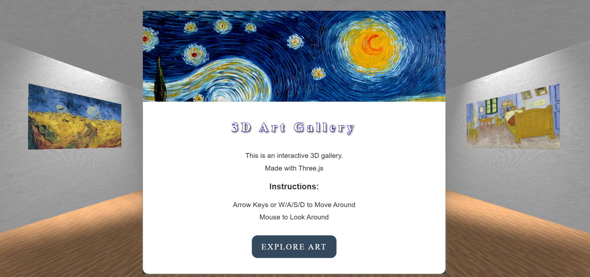

My Work at The Nguyen Collective
Below are some of my featured web development projects, highlighting my skills in responsive design, JavaScript interactivity, and creative front-end development. Each project demonstrates my commitment to user experience, clean code, and modern web standards.
Featured Projects
Web Dev Portfolio
A fully responsive, modern portfolio site built with HTML, CSS, and JavaScript. The site adapts seamlessly across devices, showcasing creative work in an elegant, easy-to-navigate format. This project emphasized accessibility, visual storytelling, and performance optimization.
- Technologies Used: HTML5, CSS3, JavaScript
- Key Features: Responsive layout, modular design, dynamic sections.
Interactive JS Gallery
An interactive image gallery application built with JavaScript, allowing users to filter images dynamically by categories. The goal was to create a fun, intuitive, and fast image browsing experience with lightbox viewing and smooth animations.
- Technologies Used: JavaScript, HTML5, CSS3
- Key Features: Category filtering, image modals, hover effects.

What's Next?
I am currently working on expanding my portfolio with new projects involving React.js, API integrations, and advanced UX/UI design principles. Stay tuned for upcoming releases!